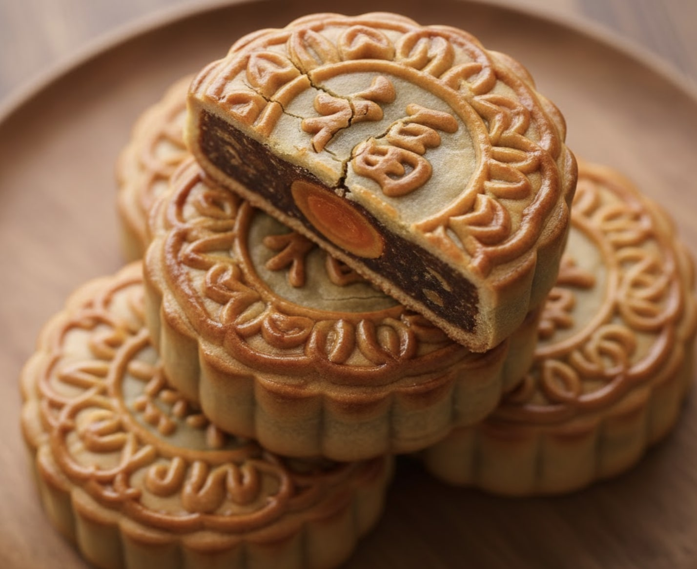
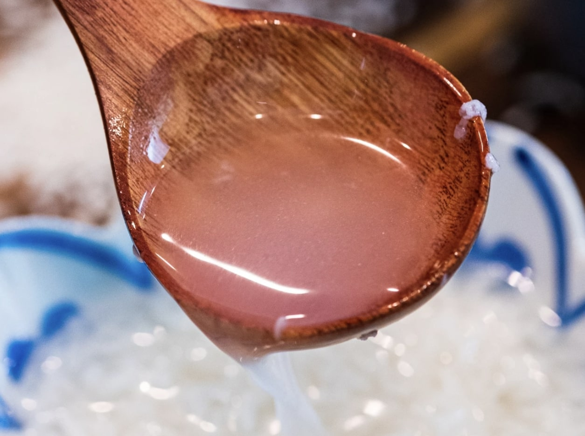
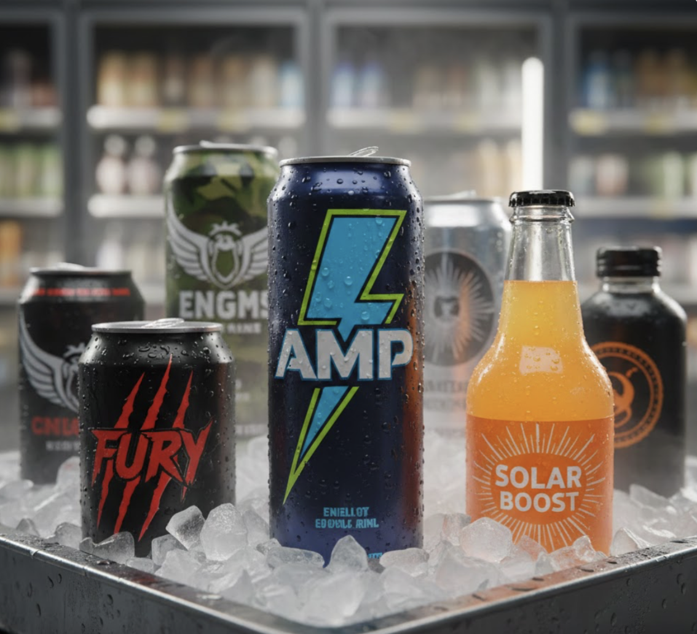

Projects & Research
Food science explorations, research, and web projects — from fermentation to things I’ve built.
Foodmon App: Gamified Food Collection
A gamified food collection web application where users can browse food cards, mark foods as eaten, save favorites, and track their food adventures - just like collecting Pokemon! (In progress)
Wolfie Dine: SBU Dining Hall Menu Aggregator
A student-run menu aggregator website for Stony Brook University dining halls which allows viewers to see all available meal options from different dining halls in one place.

Mooncake Survey: Changing Traditions
A survey exploring how mooncake traditions are evolving across generations, examining cultural preferences and modern adaptations of this Mid-Autumn Festival delicacy.

Interpreting Cis-regulatory Mechanisms from Genomic Deep Learning with Kolmogorov-Arnold Networks
Research exploring the use of Kolmogorov-Arnold Networks (KANs) for interpreting cis-regulatory mechanisms in genomic deep learning.

Homemade Rice Wine Project
Traditional Chinese fermentation project aiming to explore the biochemical processes behind rice wine making, trying to combine the culinary chemistry with cultural heritage.

The Effect of Fluorescence in Energy Drinks
An experiment investigating what causes energy drinks to emit luminescence, using spectrophotometry to analyze vitamin B2 content and fluorescent properties.